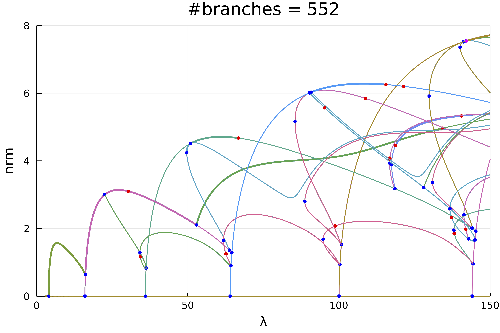

1d Kuramoto–Sivashinsky Equation
This is work in progress... In particular, there is a combinatorial explosion that I need to address.
The following example is exposed in Evstigneev, Nikolay M., and Oleg I. Ryabkov. Bifurcation Diagram of Stationary Solutions of the 2D Kuramoto-Sivashinsky Equation in Periodic Domains. Journal of Physics: Conference Series 1730, no. 1 2021
We study the 1d Kuramoto–Sivashinsky equation with Dirichlet boundary conditions:
\[\left(2 u u'+ u''\right)+2\lambda u^{(4)}=0,\ u(0)=u(\pi)=0.\]
We discretize the problem by using $u(x)=\sum_{k=1}^{\infty} u_{k} \sin (k x)$ which gives
\[\left(2\lambda k^4-k^2\right) u_{k}+\frac{k}{2}\left(\sum_{l=1}^{\infty} u_{k+l} u_{k}-\frac{1}{2} \sum_{l+m=k} u_{l} u_{m}\right)=0.\]
This is a good example for the use of automatic bifurcation diagram as we shall see. Let us first encode our problem
using Revise, LinearAlgebra, Plots
using Parameters, Setfield, ForwardDiff
using BifurcationKit
const BK = BifurcationKit
# we use this library for plotting
using ApproxFun
function generateLinear(n)
Δ = [-k^2 for k = 1:n]
return Δ, Δ.^2
end
function Fks1d(a, p)
@unpack Δ, Δ2, λ, N = p
out = (2λ) .* (Δ2 .* a)
out .+= (Δ .* a)
for l=1:N
for m=1:N
if 0 < l+m <= N
out[l+m] += l*a[l]*a[m]
end
if 0 < m-l <= N
out[m-l] += l*a[l]*a[m]
end
if 0 < -(m-l) <= N
out[l-m] -= l*a[l]*a[m]
end
end
end
out .*= -1
return out
end
# functional jacobian
Jks1d(u, p) = ForwardDiff.jacobian(z -> Fks1d(z,p), u)
# we group the differentials together
jet = BK.get3Jet(Fks1d, Jks1d)Having defined the model, we chose parameters:
N = 50
Δ, Δ2 = generateLinear(N)
par_ks = (Δ = Δ, Δ2 = Δ2, λ = 0.75, N = N)and continuation options
optn = NewtonPar(verbose = false, tol = 1e-9, maxIter = 15)
optc = ContinuationPar(pMin = 1/150., pMax = 1., maxSteps = 700, newtonOptions = optn,
dsmax = 0.01, dsmin = 1e-4, ds = -0.001, detectBifurcation = 3, nev = N, nInversion = 8,
maxBisectionSteps = 30, dsminBisection = 1e-10, plotEveryStep = 50)
kwargscont = (linearAlgo = MatrixBLS(),
verbosity = 2, plot = true,
printSolution = (x, p) -> (s = sum(x), u2 = x[3], nrm = norm(x)),
plotSolution = (x, p; kwargs...) -> plot!(Fun(SinSpace(), x) ; kwargs...),
normC = norm)Computation of the bifurcation diagram
# function to adapt continuation option to recursion level
function optrec(x, p, l; opt = optc)
level = l
if level <= 2
return setproperties(opt; dsmax = 0.005, maxSteps = 2000,
detectBifurcation = 3, detectLoop = true, nInversion = 6)
else
return setproperties(opt; dsmax = 0.005, maxSteps = 2000,
detectBifurcation = 3, detectLoop = true, nInversion = 6)
end
end
# we now compute the bifurcation diagram
# that is the connected component of (0,0)
diagram = @time bifurcationdiagram(jet...,
zeros(N), par_ks, (@lens _.λ), 4, optrec;
kwargscont..., verbosity = 0,
)Plotting the result can be done using
plot(diagram; code = (), plotfold = false, markersize = 3, putspecialptlegend = false,
plotcirclesbif = true, applytoX = x->2/x, vars = (:param, :nrm),
xlim = (0,150), ylim=(0,8))
title!("#branches = $(size(diagram, code))")